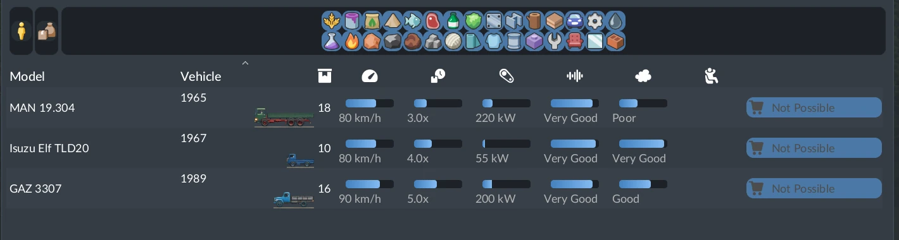
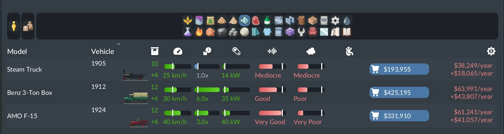
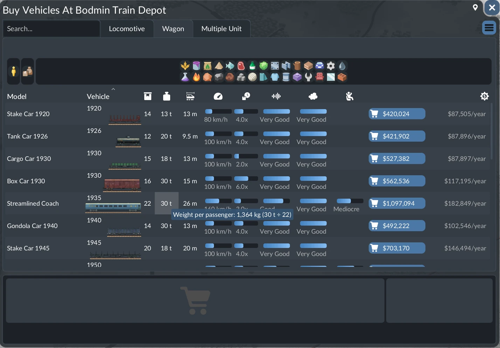

Vehicle Enhancements
The vehicle store's table layout lines up many vehicles' figures at once, but leaves out what each costs to run, a wagon's weight and length, and any comparison with the vehicle you are replacing. This mod adds them to the table.
The vehicle store, opened from a depot or the Line Manager, has two layouts: a list, one vehicle at a time with all its figures, and a table that lines up many vehicles in columns. All three features work in the table.
Running Cost Column
Setting: Running Cost Column · On by default
- 1The new column's header, the game's running cost icon: click it to sort.
- 2The AEC Routemaster costs $133,062 a year to run, beside its $798,372 price.
Why
The table layout shows each vehicle's price on its buy button but not what it costs to run each year. To compare running costs you switch to the list layout and look at one vehicle at a time.
What it does
A column right after the buy button shows each vehicle's running cost a year, the same figure the list layout shows under the price. Click its header to sort by it.
Replace Comparison
Setting: Replace Comparison · On by default
- 1Plain blue bars and grey figures: nothing shows whether a truck beats the vehicle being replaced.

- 1Capacity 10, and under it +4: four more than the horse carriage, so green.
- 2Each bar runs to the truck's value, green where better, with a white line at the horse carriage's.
- 3Red where worse: the steam truck is noisier and dirtier than the horse carriage.
- 4Running cost a year, and under it how much more than the horse carriage's: red, as a higher cost is worse.
Two Replace stores in the table layout, from different saves. On the right, horse carriages are being replaced with goods trucks.
Why
When you replace a vehicle, the store's list layout can compare each vehicle with the one being replaced, but the table layout, where you see many at once, compares nothing. You have to remember the old vehicle's figures and check each column against them.
What it does
In a Replace store's table, each figure (capacity, speed, loading speed, power, noise, pollution, comfort and the running cost) is green where the vehicle is better than the one replaced and red where it is worse. Each bar is drawn in the same green or red, up to the vehicle's value, with a white line where the replaced vehicle's value sits. Capacity and running cost also show the difference under the figure.
How to use
- Open Replace for a vehicle, from its window or the Line Manager's vehicle list.
- Switch the store to its table layout.
Good to know
- Better means more capacity, speed, power and comfort, and less noise, pollution and running cost.
- A rating can read Very Good in red: it is still worse than the replaced vehicle's.
- Hover a figure to see both values and the difference.
- As in the game's own comparison, it shows when every vehicle being replaced is the same model.
- Trains and trams: each locomotive row is compared with the locomotive of the train being replaced, each wagon row with its wagons, and railcars and multiple units likewise, whenever all of that kind in the trains being replaced are the same model.
- When modifying a train, for example to swap its locomotive or wagons, the table compares against the train as it is now.
- The list layout's own Compare bars are drawn the same way.
Wagon Weight and Length
Setting: Wagon Weight and Length · On by default
- 1Weight: the wagon's empty weight, right after its capacity.
- 2Length. The Power column, always empty for wagons, is gone.
- 3Hover a weight or length for its figure per cargo item: 1,364 kg per passenger here. Both columns sort by it.
Why
The table layout shows no weight or length, so choosing wagons for a heavy train or a short platform means going back to the list layout. And on the Wagon tab its Power column is always empty.
What it does
On the Wagon tab (trains and trams), each wagon's weight and length come right after its capacity, and the empty Power column goes. Both sort by the figure per cargo item, per passenger for a passenger wagon: the wagon's empty weight or length divided by its capacity, so small and big wagons compare fairly.
Good to know
- Hover a weight or length for its figure per cargo item.
- When replacing or modifying trains whose wagons are all the same model, the tooltip also gives the current wagon's figure and whether the new one is more or less. The weight or length turns green where the wagon is lighter or shorter per cargo item, red where it is heavier or longer. This needs Replace Comparison on.
- The Locomotive and Multiple Unit tabs keep their Power column.
Settings
Choosing a save's mods: the gear next to Vehicle Enhancements → Settings. Each save keeps its own choice. Off turns a feature off completely.
| Setting | Default | What it does |
|---|---|---|
| Running Cost Column | On | The vehicle store's table layout shows each vehicle's running cost a year next to its price. |
| Wagon Weight and Length | On | On the Wagons tab of the store's table layout, each wagon's weight and length after its capacity (the empty Power column goes), sorted per cargo item. Their tooltips give the figure per cargo item; when replacing or modifying, each is green where it is less per cargo item than the current wagon's, red where it is more. |
| Replace Comparison | On | When replacing or modifying a vehicle, the store's table layout shows each figure in green where a vehicle is better than the one replaced, red where it is worse, with a line on the bars at the replaced vehicle. The list layout's Compare bars get the same look. |
| Logging | Off | Writes the mod's messages to the game log (stdout.txt), for bug reports. |
More
Compatibility
Works with any map and any other mod. It changes only what the vehicle store shows: prices, vehicles and what you buy stay as the game sets them.